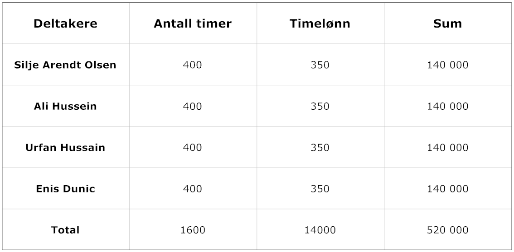

Software vi har benyttet under prosjektet er for det meste open source.
Open Source programvare utvikles derimot av en eller flere firmaer eller personer rundt i verden som deler sine kunnskaper og bidrar til stadig videreutvikling og forbedring av den aktuelle programvaren. All programvaren er gratis og kan benyttes av alle.
Noen av programmene vi brukte under prosjektet Subversion(svn) ,Netbeans, Latex, Open Office og Adobe Acrobat. Disse ligger på nettet helt gratis for bruk.
Fleste studenter har egen bærbare pce ellers er det mulighet å bruke skolens pce. Vi trengte ikke dra nytte i andre verktøy.
Med dette kan det konkluderes at vi ikke hadde store utgifter på prosjektet.
Kostnaden for å utføre dette prosjektarbeidet av gruppen blir i dette tilfelle et fiktivt overslag siden vi ikke får betalt for arbeidet. Likevel skal vi som nevnt gjøre et overslag basert på hvor mange timer vi kommer til å bruke på prosjektet men en fast timelønn.
Som vi ser av tabellen ovenfor har vi gjort et overslag som viser at den totale kostnaden for utførelsen av dette prosjektet av deltakerne vil utgjøre 560000kr til sammen.
I tillegg til de nevnte kostnadene ovenfor vil det forekomme ekstra reiseutgifter for enkelte av prosjektdeltakerne. Det kan skje ved at gruppen må jobbe overtid enkelte dager som gjør at det blir endringer i de planlagte reisetidene til deltakerne. Det er vanskelig å beregne nå hvor mye disse kostnadene vil utgjøre siden det er vanskelig å forutsi.